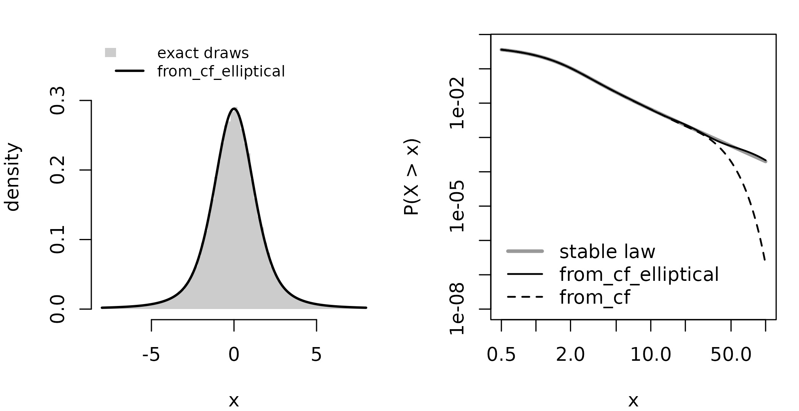

The problem
Some distributions are easiest to write down through their characteristic function, . A stable law has a closed-form characteristic function but, apart from a few cases, no closed-form density. The sum of independent variables has as characteristic function the product of theirs, while its density is a convolution integral. The state of a filter after a step with heavy-tailed noise is another such sum. In each case the density is not at hand, so the fitting regimes that need samples or a log-density do not apply directly.
proxymix fits a Gaussian mixture to the characteristic
function itself. The fit minimises the mean squared difference between
the target’s characteristic function and the mixture’s over a fixed set
of frequencies. The result is an ordinary mixture: its density,
distribution function, marginals and conditionals are in closed form,
and its quantiles and draws come directly from it.
Package capabilities
-
cf_target()builds a target from a characteristic function and checks three conditions every characteristic function meets: value 1 at zero, modulus at most 1, and equal to the complex conjugate of . -
fit_proxymix()fits such a target with regime"cf", which it picks by itself when the target has a characteristic function and neither samples nor a log-density.from_cf()is the same fit called directly. -
from_cf_elliptical()fits normals with a common centre and proportional covariances, for elliptical laws such as the multivariate Cauchy.from_cf_sources()fits a linear mix of independent sources. - Every fit carries lower and upper bounds for the Kolmogorov distance
between the target and the mixture, the largest gap between their
distribution functions. In more than one dimension the bounds are for
eight one-dimensional projections: the coordinate axes, made up to eight
with random directions.
gmm_cf_distance()computes them along any direction.
A sum of independent variables
Let , with following a Gamma distribution with shape 3 and uniform on , independent of . The characteristic function of is the product of and . The function below takes a matrix of frequencies, one per row, and returns one complex value for each row.
cf_sum <- function(t) {
s <- t[, 1]
uniform <- ifelse(s == 0, 1, sin(s) / s)
(1 - 1i * s)^(-3) * uniform
}
tgt <- cf_target(cf_sum, n_dim = 1L, name = "Gamma(3) plus uniform")
fit_sum <- fit_proxymix(tgt, N = 4L, n_freq = 2048L, seed = 1L)
#> Auto-selected regime: "cf".
fit_sum
#> <gmm_fit>: regime = "cf", K = 4, p = 1
#> target : Gamma(3) plus uniform
#> iterations : NA
#> converged : TRUE
#> cf held-out RMS error : 0.00239
#> Kolmogorov distance : at least 0.00235, at most 0.00735 (1 direction)
#> [1] w = 0.3767, |mu| = 2.2412, tr(Sigma) = 0.9104
#> [2] w = 0.3512, |mu| = 3.6702, tr(Sigma) = 1.7945
#> [3] w = 0.1497, |mu| = 1.1398, tr(Sigma) = 0.5236
#> [4] w = 0.1223, |mu| = 5.5975, tr(Sigma) = 4.1048The printed fit reports two checks. The held-out error is the root mean square difference between the two characteristic functions at frequencies the fit did not use. The Kolmogorov bounds say how far apart the two distribution functions can be. The distribution function of can also be computed here by integrating the Gamma distribution function over the uniform, which gives an independent check of the bounds.
cdf_sum <- function(x) {
vapply(x, function(z) {
stats::integrate(function(u) stats::pgamma(z - u, 3) / 2, -1, 1)$value
}, numeric(1))
}
x <- seq(-1, 15, length.out = 801L)
exact_gap <- max(abs(cdf_sum(x) - pgmm(x, fit_sum)))
q_sum <- gmm_fit_quality(fit_sum)
c(lower = q_sum$cf_distance, `fine grid` = exact_gap, upper = q_sum$cf_upper)
#> lower fine grid upper
#> 0.002349997 0.002393683 0.007350001The largest gap on this fine grid, 0.0024, lies between the two bounds. The lower bound is the largest gap the package finds on a grid of 201 points between the mixture’s 0.005 and 0.995 quantiles. The upper bound adds what can happen between the grid points and outside the grid. With the default range the probability left outside the grid, 0.005 at each end, sets a floor of about 0.005 under the upper bound. A wider range of probabilities tightens it:
wide <- gmm_cf_distance(fit_sum, cf_sum, probs = c(1e-4, 1 - 1e-4),
n_grid = 801L)
c(lower = wide$distance, upper = wide$upper)
#> lower upper
#> 0.002393641 0.002621179The plot shows the difference between the two distribution functions, with the default lower bound dashed and the default upper bound dotted.
plot(x, cdf_sum(x) - pgmm(x, fit_sum), type = "l", lwd = 1.5,
ylim = c(-1, 1) * q_sum$cf_upper, xlab = "x",
ylab = "exact minus mixture distribution function")
abline(h = c(-1, 1) * q_sum$cf_distance, lty = 2)
abline(h = c(-1, 1) * q_sum$cf_upper, lty = 3)
abline(h = 0, col = "grey60")
legend("topright", c("lower bound", "upper bound"), lty = c(2, 3),
bty = "n")A stable law
The symmetric stable law of index 1.5 has characteristic function
.
Its density has no closed form, and its variance is infinite: the tail
probability
falls off like
.
A mixture of normals has light tails, so from_cf() warns
that it can match the centre of the distribution but not its far
tails.
cf_stable <- function(t) exp(-abs(t[, 1])^1.5)
fit_stable <- from_cf(cf_stable, n_dim = 1L, N = 6L, n_freq = 2048L,
seed = 1L)
#> Warning: The target has heavy tails: the tail index read from `cf` is 1.5, below 2.
#> ℹ The mixture has finite variance. It can match the centre of the distribution
#> and not its far tails.Every symmetric stable law is a scale mixture of normals.
from_cf_elliptical() uses this: it places normals with a
common centre on a geometric grid of standard deviations, and finds
their weights by non-negative least squares.
fit_ell <- from_cf_elliptical(cf_stable, n_dim = 1L, seed = 1L)
fit_ell
#> <gmm_fit>: regime = "cf", K = 10, p = 1
#> target : <none>
#> iterations : NA
#> converged : TRUE
#> cf held-out RMS error : 0.000557
#> Kolmogorov distance : at least 0.000245, at most 0.00509 (1 direction)
#> [1] w = 0.5595, |mu| = 0.0000, tr(Sigma) = 1.3211
#> [2] w = 0.2645, |mu| = 0.0000, tr(Sigma) = 3.7563
#> [3] w = 0.0618, |mu| = 0.0000, tr(Sigma) = 10.6806
#> [4] w = 0.0500, |mu| = 0.0000, tr(Sigma) = 30.3689
#> [5] w = 0.0478, |mu| = 0.0000, tr(Sigma) = 0.4646
#> ... 5 more componentsThe distribution function of a stable law can be written as a one-dimensional integral over a finite range (Nolan, 1997), which gives a check that uses neither the characteristic function nor the fit. The function below implements it for the symmetric case.
## symmetric stable law with characteristic function exp(-|t|^alpha),
## for 1 < alpha <= 2
pstable_sym <- function(x, alpha) {
r <- alpha / (alpha - 1)
v <- function(th) {
(cos(th) / sin(alpha * th))^r * cos((alpha - 1) * th) / cos(th)
}
vapply(x, function(z) {
if (z == 0) return(0.5)
upper_tail <- stats::integrate(function(th) exp(-abs(z)^r * v(th)),
0, pi / 2, rel.tol = 1e-10)$value / pi
if (z > 0) 1 - upper_tail else upper_tail
}, numeric(1))
}
probs <- c(0.5, 0.75, 0.95, 0.99, 0.999)
exact_q <- vapply(probs, function(p) {
if (p == 0.5) return(0)
stats::uniroot(function(x) pstable_sym(x, 1.5) - p, c(0, 200),
tol = 1e-10)$root
}, numeric(1))
quantiles <- rbind(
exact = exact_q,
`from_cf, 6 components` = qgmm(probs, fit_stable),
from_cf_elliptical = qgmm(probs, fit_ell)
)
colnames(quantiles) <- probs
round(quantiles, 3)
#> 0.5 0.75 0.95 0.99 0.999
#> exact 0 0.969 3.052 7.736 34.321
#> from_cf, 6 components 0 0.969 3.050 7.695 31.348
#> from_cf_elliptical 0 0.969 3.048 7.753 32.945Up to the 0.95 quantile both fits agree with the exact values to within 0.005, and at 0.99 to within 0.04. At 0.999 the general fit falls short, as its warning said it would, and the scale mixture comes closer. The largest gap between the exact and fitted distribution functions on a fine grid lies between the bounds of each fit:
x <- seq(-60, 60, length.out = 4001L)
exact_cdf <- pstable_sym(x, 1.5)
bounds <- sapply(list(`from_cf` = fit_stable, from_cf_elliptical = fit_ell),
function(fit) {
q <- gmm_fit_quality(fit)
c(lower = q$cf_distance, `fine grid` = max(abs(exact_cdf - pgmm(x, fit))),
upper = q$cf_upper)
})
signif(bounds, 3)
#> from_cf from_cf_elliptical
#> lower 8.69e-05 0.000245
#> fine grid 3.73e-04 0.000245
#> upper 5.04e-03 0.005090A sampler also exists for stable laws (Chambers et al., 1976), which gives a second check, on the density. The left panel compares the mixture density with a histogram of exact draws. The right panel shows the upper tail on log scales. The scale mixture stays close to the exact tail up to , the edge of the plot, while the six-component fit drops away beyond about . Each mixture still has normal tails beyond its widest component.
set.seed(2)
u <- stats::runif(1e5, -pi / 2, pi / 2)
e <- stats::rexp(1e5)
draws <- sin(1.5 * u) / cos(u)^(1 / 1.5) *
(cos(-0.5 * u) / e)^(-0.5 / 1.5)
op <- par(mfrow = c(1, 2), mar = c(4, 4, 1.5, 1))
## density over all draws, shown on (-8, 8)
h <- hist(draws[abs(draws) < 8], breaks = seq(-8, 8, by = 0.2), plot = FALSE)
h$density <- h$counts / (length(draws) * 0.2)
plot(h, freq = FALSE, col = "grey80", border = NA, main = "", xlab = "x",
ylab = "density", ylim = c(0, 0.38))
xs <- seq(-8, 8, length.out = 401L)
lines(xs, dgmm(matrix(xs), fit_ell), lwd = 2)
legend("topleft", c("exact draws", "from_cf_elliptical"),
fill = c("grey80", NA), border = NA, lwd = c(NA, 2), bty = "n",
cex = 0.8)
xt <- exp(seq(log(0.5), log(100), length.out = 200L))
## P(X > x) = P(X < -x) by symmetry, which avoids 1 - F(x) rounding to 0
plot(xt, pstable_sym(-xt, 1.5), log = "xy", type = "l", lwd = 3,
col = "grey60", ylim = c(1e-8, 0.5), xlab = "x", ylab = "P(X > x)")
lines(xt, pgmm(-xt, fit_ell), lwd = 1.5)
lines(xt, pgmm(-xt, fit_stable), lwd = 1.5, lty = 2)
legend("bottomleft", c("stable law", "from_cf_elliptical", "from_cf"),
lwd = c(3, 1.5, 1.5), lty = c(1, 1, 2),
col = c("grey60", "black", "black"), bty = "n")
par(op)Two dimensions
The bivariate Cauchy distribution with centre
and scale matrix
has characteristic function
.
It is elliptical, so from_cf_elliptical() applies, and each
coordinate is a Cauchy variable, which gives exact quantiles to check
against.
S <- matrix(c(2, 0.5, 0.5, 1), 2L)
cf_cauchy2 <- function(t) exp(1i * t[, 1] - sqrt(rowSums((t %*% S) * t)))
fit_c2 <- from_cf_elliptical(cf_cauchy2, n_dim = 2L, seed = 1L)
fit_c2
#> <gmm_fit>: regime = "cf", K = 14, p = 2
#> target : <none>
#> iterations : NA
#> converged : TRUE
#> cf held-out RMS error : 0.000206
#> Kolmogorov distance : at least 9.83e-05, at most 0.005 (8 directions)
#> [1] w = 0.3014, |mu| = 1.0000, tr(Sigma) = 4.5137
#> [2] w = 0.2342, |mu| = 1.0000, tr(Sigma) = 1.2550
#> [3] w = 0.1986, |mu| = 1.0000, tr(Sigma) = 16.2342
#> [4] w = 0.1137, |mu| = 1.0000, tr(Sigma) = 58.3883
#> [5] w = 0.0599, |mu| = 1.0000, tr(Sigma) = 210.0006
#> ... 9 more components
probs <- c(0.01, 0.05, 0.5, 0.95, 0.99)
round(rbind(
`first, exact` = 1 + sqrt(S[1, 1]) * stats::qcauchy(probs),
`first, mixture` = qgmm(probs, gmm_marginalise(fit_c2, 1L)),
`second, exact` = sqrt(S[2, 2]) * stats::qcauchy(probs),
`second, mixture` = qgmm(probs, gmm_marginalise(fit_c2, 2L))
), 3)
#> [,1] [,2] [,3] [,4] [,5]
#> first, exact -44.001 -7.929 1 9.929 46.001
#> first, mixture -43.986 -7.928 1 9.928 45.986
#> second, exact -31.821 -6.314 0 6.314 31.821
#> second, mixture -31.810 -6.313 0 6.313 31.810In two or more dimensions the bounds are computed along eight directions, so they describe those one-dimensional projections, not every direction.
A second structure is a linear mix of independent sources,
,
with Gaussian noise
.
Here the two sources follow a Gamma distribution with shape 3, and the
noise has covariance
.
from_cf_sources() estimates the mixing matrix from the
characteristic function and fits each source in one dimension.
A <- matrix(c(0.7, 0.3, 0, -0.7), 2L)
cf_mix <- function(t) {
u <- t %*% A
(1 - 1i * u[, 1])^(-3) * (1 - 1i * u[, 2])^(-3) *
exp(-0.125 * rowSums(t^2))
}
fit_src <- from_cf_sources(cf_mix, n_dim = 2L, N = 3L, n_freq = 1024L,
seed = 1L)
fit_src
#> Fit to a linear mix of 2 independent sources, 3 components each
#> Root mean square error of the characteristic function on fresh frequencies:
#> 0.00239
#> Elements: mixing, sources, noise_cov, cf, draw, project, and diagnosticsThe bounds stored with each source refer to the separated coordinates
,
not to
.
With noise present, each coordinate of
is a source plus part of the transformed noise, and the order, sign and
scale of the coordinates are not identified. For a direction
,
project() gives the mixture of
,
and gmm_cf_distance() gives its bounds against the
characteristic function of
,
which is
.
a <- c(1, 1) / sqrt(2)
along <- fit_src$project(a)
bracket <- gmm_cf_distance(along, function(s) cf_mix(s %*% t(a)))
c(lower = bracket$distance, upper = bracket$upper)
#> lower upper
#> 0.001825626 0.006825626The target can be simulated here, so half a million exact draws of give one more check. Their largest distance from the mixture distribution function has a sampling error of about 0.0015.
set.seed(3)
n <- 5e5
s_draws <- cbind(stats::rgamma(n, 3), stats::rgamma(n, 3))
x_draws <- s_draws %*% t(A) + matrix(stats::rnorm(2 * n, sd = 0.5), n)
y <- sort(as.vector(x_draws %*% a))
p_mix <- pgmm(y, along)
max(abs(p_mix - seq_len(n) / n), abs(p_mix - (seq_len(n) - 1) / n))
#> [1] 0.001840674The distance from the draws agrees with the lower bound within that sampling error.
One filtering step
A state
follows the mixture below. One step later it is
,
where
is Cauchy noise with scale 0.2, and
is then observed with normal error of variance 0.25. The law of
is a convolution with no closed-form density, but its characteristic
function is the product of the two. The heavy-tail warning of
from_cf() is expected here and is suppressed.
prior <- gmm(weights = c(0.5, 0.5), means = list(-1, 2),
covariances = list(matrix(0.3), matrix(0.5)))
cf_pred <- function(t) gmm_cf(prior, 0.9 * t[, 1]) * exp(-0.2 * abs(t[, 1]))
pred <- suppressWarnings(
from_cf(cf_pred, n_dim = 1L, N = 6L, n_freq = 2048L, seed = 1L),
classes = "proxymix_cf_heavy_tail"
)The predicted state is a mixture, so the update on an observation is the closed-form Bayes update of a mixture under a normal measurement.
post <- gmm_observe(pred, A = matrix(1), y = 1.2, noise_cov = matrix(0.25))
post_mean <- sum(post@weights * unlist(post@means))
post_sd <- sqrt(sum(post@weights * (unlist(post@covariances) +
unlist(post@means)^2)) - post_mean^2)As a check, the predicted density can be computed by numerical convolution and multiplied by the normal likelihood on a grid.
dens_pred <- function(x) {
vapply(x, function(z) {
stats::integrate(function(e) {
dgmm(matrix((z - e) / 0.9), prior) / 0.9 * stats::dcauchy(e, 0, 0.2)
}, -Inf, Inf, subdivisions = 500L)$value
}, numeric(1))
}
grid <- seq(-6, 8, length.out = 1401L)
h <- grid[2] - grid[1]
w <- dens_pred(grid) * stats::dnorm(1.2, grid, 0.5)
w <- w / sum(w * h)
exact_mean <- sum(grid * w * h)
exact_sd <- sqrt(sum((grid - exact_mean)^2 * w * h))
round(rbind(exact = c(mean = exact_mean, sd = exact_sd),
mixture = c(post_mean, post_sd)), 4)
#> mean sd
#> exact 1.3370 0.4623
#> mixture 1.3367 0.4628The posterior from the mixture agrees with the numerical posterior to about three decimal places in mean and standard deviation. The normal measurement keeps the posterior within the region where the predicted mixture fits the convolution well. A far-out observation would lean on the tails, where the mixture is least accurate.
Reading the bounds
The quality record returned by gmm_fit_quality() has the
largest lower bound and the largest upper bound over the checked
directions as cf_distance and cf_upper, and
fit@diagnostics$bracket has both bounds for each
direction.
fit_sum@diagnostics$bracket
#> direction distance upper upper_inside truncation cutoff_gap
#> 1 1 0.002349997 0.007350001 0.00331041 4.043734e-09 1.520205e-08-
distanceis the largest gap between the two distribution functions on the grid. It is a lower bound for the Kolmogorov distance, up to the error of the numerical integration, which is of the order of1e-6. -
upperis an upper bound for it over the whole line. It holds whentruncationandcutoff_gapare small, which they are here. Both measure how much of the inversion integral (Gil-Pelaez, 1951) was left out, and are large when the target has a point mass or a characteristic function that decays very slowly. - The bounds compare distribution functions. They are not a Kullback-Leibler divergence, which needs a density of the target.
- On a mixture made from a fit by the operators of the package (a
marginal, a Bayes update, a convolution),
cf_distance,cf_upperandcf_heldout_rmsareNA. The bounds of the fit need not hold for the new mixture: the errors of a convolution, for one, can add up.gmm_cf_distance()against the characteristic function of the result gives its own bounds.
bracket = FALSE skips the bounds, and
gmm_cf_distance() gives them for any other direction, grid
or range of probabilities.
References
Chambers, J. M., Mallows, C. L. and Stuck, B. W. (1976). A method for simulating stable random variables. Journal of the American Statistical Association, 71(354), 340-344. https://doi.org/10.1080/01621459.1976.10480344
Gil-Pelaez, J. (1951). Note on the inversion theorem. Biometrika, 38(3-4), 481-482. https://doi.org/10.1093/biomet/38.3-4.481
Nolan, J. P. (1997). Numerical calculation of stable densities and distribution functions. Communications in Statistics. Stochastic Models, 13(4), 759-774. https://doi.org/10.1080/15326349708807450
van der Hoek, J. and Elliott, R. J. (2024). Mixtures of multivariate Gaussians. Stochastic Analysis and Applications. https://doi.org/10.1080/07362994.2024.2372605